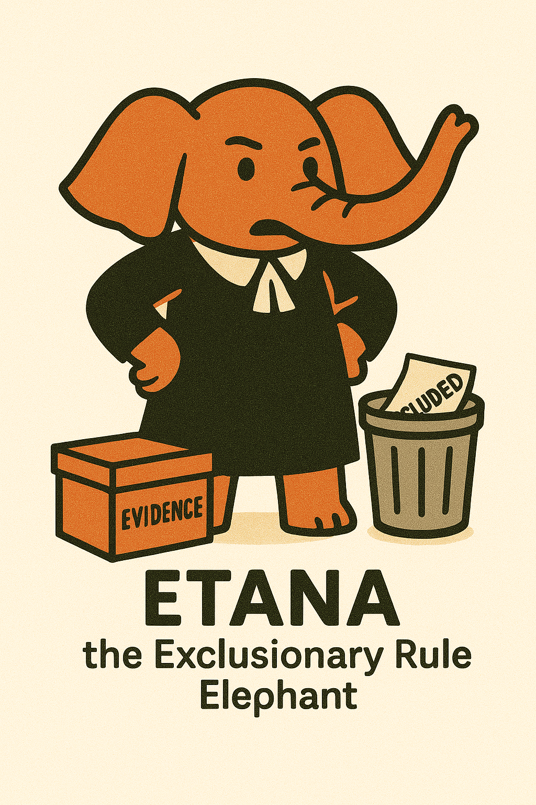

The Exclusionary Rule

Overview of the Exclusionary Rule
The exclusionary rule is a judicial remedy that prevents evidence obtained in violation of the Constitution from being used in criminal trials. It primarily serves as a remedy for Fourth Amendment violations, though it also applies to certain Fifth and Sixth Amendment violations. Unlike the constitutional protections themselves, the exclusionary rule is a judicially created remedy designed to deter police misconduct rather than a personal constitutional right of the defendant.
Purposes and Justifications
- Deterrence: Discourage law enforcement from violating constitutional rights
- Judicial Integrity: Prevent courts from becoming accomplices in constitutional violations (though this rationale has been de-emphasized in recent decades)
- Remedial Function: Provide a remedy for constitutional violations when civil remedies may be ineffective
- Systemic Function: Encourage proper training and institutional compliance with constitutional requirements
The Supreme Court has increasingly emphasized that the exclusionary rule is not a constitutional right itself, but rather a prudential judicial doctrine. This characterization has allowed the Court to create numerous exceptions to the rule, focusing on whether exclusion would meaningfully deter future constitutional violations by law enforcement.
flowchart TD
start["EXCLUSIONARY RULE ANALYSIS"] --> violation["STEP 1: Constitutional Violation
Was there a violation of the Fourth,
Fifth, or Sixth Amendment?"]
violation -- "NO: No constitutional violation" --> admissible["EVIDENCE ADMISSIBLE:
No basis for exclusion"]
violation -- "YES: Constitutional violation occurred" --> standing["STEP 2: Standing to Challenge
Does the defendant have standing to challenge?
- Personal constitutional rights violated
- Legitimate expectation of privacy in place searched
- Not merely a third party's rights"]
standing -- "NO: No standing" --> admissible
standing -- "YES: Has standing" --> exceptions["STEP 3: Check for Exceptions
Does an exception to the exclusionary rule apply?
- Good faith exception
- Inevitable discovery
- Independent source
- Attenuation doctrine
- Impeachment use
- Public safety exception"]
exceptions -- "YES: Exception applies" --> admissible
exceptions -- "NO: No exception applies" --> balancing["STEP 4: Cost-Benefit Analysis
Courts increasingly apply balancing test:
- Deterrence benefits of exclusion
- vs. Social costs of excluding evidence"]
balancing -- "Benefits outweigh costs" --> exclude["EVIDENCE EXCLUDED:
Cannot be used in prosecution's case-in-chief"]
balancing -- "Costs outweigh benefits" --> admissible
exclude --> otherUses["STEP 5: Consider Other Uses
Evidence may still be usable:
- For impeachment purposes
- In non-criminal proceedings
- In grand jury
- For sentencing"]
classDef process fill:#d1e8ff,stroke:#2980b9,stroke-width:2px
classDef question fill:#fff8e1,stroke:#ff8f00,stroke-width:1px
classDef negative fill:#ffebee,stroke:#c62828,stroke-width:2px
classDef positive fill:#e8f5e9,stroke:#2e7d32,stroke-width:2px
classDef warning fill:#ffecb3,stroke:#ffa000,stroke-width:1px
class start process
class violation,standing,exceptions,balancing question
class exclude negative
class admissible positive
class otherUses warning
Mapp v. Ohio 367 U.S. 643 (1961)
The exclusionary rule applies to state court proceedings through the Fourteenth Amendment, requiring state courts to exclude evidence obtained in violation of the Fourth Amendment.
Police officers forcibly entered Mapp's home without a proper search warrant. After a thorough search, they found allegedly obscene materials and arrested Mapp for possession of these materials. At trial, the prosecution did not produce a search warrant, and Mapp was convicted based on the evidence seized during the search.
The Supreme Court overruled Wolf v. Colorado (1949), which had held that while the Fourth Amendment applied to the states through the Fourteenth Amendment, the exclusionary rule did not. The Court reasoned that without the exclusionary rule, the Fourth Amendment would be reduced to "a form of words" and would be meaningless to those subjected to illegal searches. The Court emphasized that the exclusion of evidence was necessary to deter police misconduct and maintain judicial integrity by preventing courts from becoming accomplices in constitutional violations. This landmark decision nationalized the exclusionary rule, creating a uniform standard for both federal and state courts and significantly expanding the impact of Fourth Amendment protections.
Scope and Application of the Exclusionary Rule
The exclusionary rule applies to evidence obtained directly through constitutional violations, as well as evidence derived from those violations (the "fruit of the poisonous tree"). However, the Supreme Court has limited its application in several important ways.
Proceedings Where the Rule Applies
- Criminal Trials: The exclusionary rule applies in the prosecution's case-in-chief in criminal trials
- Limited Application Outside Criminal Trials: Generally does not apply in:
- Grand jury proceedings (United States v. Calandra)
- Civil proceedings
- Deportation hearings (INS v. Lopez-Mendoza)
- Parole revocation hearings (Pennsylvania Board of Probation v. Scott)
- Habeas corpus proceedings
- Limited Use in Criminal Trials: Evidence inadmissible in the case-in-chief may still be used:
- To impeach a defendant's testimony (United States v. Havens)
- At sentencing (United States v. Tejada)
Types of Constitutional Violations Covered
- Fourth Amendment Violations: The primary application of the rule
- Fifth Amendment (Self-Incrimination): Applies to coerced confessions and Miranda violations (with limitations)
- Sixth Amendment (Right to Counsel): Applies to evidence obtained after right to counsel has attached in violation of that right
Cost-Benefit Analysis
In recent decades, the Supreme Court has increasingly applied a cost-benefit approach to the exclusionary rule, weighing the deterrent benefits against the social costs of excluding reliable evidence. This approach has led to the creation of numerous exceptions where the Court has found that the costs of exclusion outweigh the deterrence benefits.
Exceptions to the Exclusionary Rule
The Supreme Court has recognized several significant exceptions to the exclusionary rule, reflecting its view that the rule should apply only where its deterrence benefits outweigh its substantial social costs.
Major Exceptions to the Exclusionary Rule
- Good Faith Exception: Evidence obtained by officers reasonably relying on:
- A defective warrant issued by a neutral magistrate (United States v. Leon)
- A statute later declared unconstitutional (Illinois v. Krull)
- A court database with erroneous information (Arizona v. Evans, Herring v. United States)
- Binding appellate precedent later overruled (Davis v. United States)
- Independent Source Doctrine: Evidence discovered through means independent of the constitutional violation (Murray v. United States)
- Inevitable Discovery Doctrine: Evidence that would have inevitably been discovered through lawful means (Nix v. Williams)
- Attenuation Doctrine: Connection between the constitutional violation and the evidence is sufficiently attenuated (Wong Sun v. United States)
- Impeachment Exception: Illegally obtained evidence may be used to impeach a defendant's testimony (United States v. Havens)
flowchart TD
start["EXCLUSIONARY RULE EXCEPTIONS"] --> goodFaith["GOOD FAITH EXCEPTION:
Did officers reasonably rely on:
- Facially valid warrant from neutral magistrate
- Statute later declared unconstitutional
- Court records with erroneous information
- Binding precedent later overruled?"]
goodFaith -- "YES: Good faith reliance" --> admissible["EVIDENCE ADMISSIBLE:
Exclusion would not deter future police misconduct"]
goodFaith -- "NO: No good faith" --> independent["INDEPENDENT SOURCE:
Was evidence discovered through means
wholly independent of the illegal activity?"]
independent -- "YES: Independent source" --> admissible
independent -- "NO: Not independent" --> inevitable["INEVITABLE DISCOVERY:
Would the evidence inevitably have been
discovered by lawful means?"]
inevitable -- "YES: Inevitable discovery" --> admissible
inevitable -- "NO: Not inevitable" --> attenuation["ATTENUATION DOCTRINE:
Is the connection between the illegality
and evidence attenuated by:
- Significant time passage
- Intervening circumstances
- Flagrancy of police misconduct?"]
attenuation -- "YES: Sufficiently attenuated" --> admissible
attenuation -- "NO: Not attenuated" --> impeachment["IMPEACHMENT USE:
Is evidence being used only to
impeach defendant's testimony?"]
impeachment -- "YES: For impeachment only" --> limitedUse["LIMITED ADMISSIBILITY:
Only for impeachment
Not in case-in-chief"]
impeachment -- "NO: Not for impeachment" --> excluded["EVIDENCE EXCLUDED:
No exception applies"]
classDef process fill:#d1e8ff,stroke:#2980b9,stroke-width:2px
classDef question fill:#fff8e1,stroke:#ff8f00,stroke-width:1px
classDef negative fill:#ffebee,stroke:#c62828,stroke-width:2px
classDef positive fill:#e8f5e9,stroke:#2e7d32,stroke-width:2px
classDef warning fill:#ffecb3,stroke:#ffa000,stroke-width:1px
class start process
class goodFaith,independent,inevitable,attenuation,impeachment question
class excluded negative
class admissible positive
class limitedUse warning
United States v. Leon 468 U.S. 897 (1984)
Evidence obtained by police officers acting in reasonable reliance on a search warrant issued by a neutral magistrate, but ultimately found to be invalid, is admissible in the prosecution's case-in-chief (the "good faith exception").
Police officers conducted a search of several residences based on a facially valid warrant issued by a magistrate. The warrant was later found to lack probable cause. The trial court suppressed the evidence, and the Court of Appeals affirmed.
The Supreme Court created the "good faith exception" to the exclusionary rule, holding that evidence obtained by officers reasonably relying on a warrant issued by a neutral magistrate should not be excluded, even if the warrant is later determined to be invalid. Justice White, writing for the majority, emphasized that the exclusionary rule is designed to deter police misconduct, not to punish errors of judges or magistrates. The Court reasoned that excluding evidence when officers acted in objective good faith would not serve the rule's deterrent purpose, as the officers did nothing wrong that deterrence could prevent. The Court did identify four situations where the good faith exception would not apply: (1) when the magistrate was misled by information the officer knew or should have known was false; (2) when the magistrate wholly abandoned their judicial role; (3) when the warrant was so facially deficient that no officer could reasonably presume it valid; and (4) when the affidavit was so lacking in probable cause that no reasonable officer would rely on it.
Fruit of the Poisonous Tree Doctrine
The "fruit of the poisonous tree" doctrine, first articulated in Silverthorne Lumber Co. v. United States (1920) and named in Nardone v. United States (1939), holds that evidence derived from information obtained in an illegal search or seizure is also inadmissible. The doctrine extends the exclusionary rule beyond direct products of constitutional violations to their indirect fruits.
Types of "Fruit" Subject to Exclusion
- Physical Evidence: Items discovered as a result of illegally obtained information
- Confessions: Statements made after an illegal arrest or search
- Witness Testimony: Testimony from witnesses discovered through illegal searches
- Derivative Evidence: Any other evidence that would not have been discovered but for the initial illegality
Limitations and Exceptions
The fruit of the poisonous tree doctrine is subject to the same exceptions as the exclusionary rule generally:
- Independent Source: If the evidence was or would have been discovered through independent legal means
- Inevitable Discovery: If the evidence would have inevitably been discovered through legal means
- Attenuation: If the connection between the illegality and the evidence is sufficiently attenuated
Attenuation Factors
In determining whether the taint of an illegal search or seizure has been sufficiently attenuated, courts consider:
- Temporal Proximity: The time elapsed between the illegality and the acquisition of evidence
- Intervening Circumstances: Events breaking the causal chain between the illegality and the evidence
- Flagrancy of Police Misconduct: The purpose and flagrancy of the official misconduct
- Free Will/Voluntary Acts: Whether intervening acts of free will purge the taint of illegality
Wong Sun v. United States 371 U.S. 471 (1963)
Not all evidence derived from an illegal search or seizure is barred as "fruit of the poisonous tree." The proper test is whether the evidence was obtained by exploitation of the initial illegality or by means sufficiently distinguishable to purge the taint.
Federal narcotics agents illegally entered Toy's laundry, pursued him into his living quarters, and arrested him. Toy then made statements that led agents to Yee, who surrendered heroin. Yee implicated Wong Sun, who was arrested and released. Several days later, Wong Sun voluntarily returned to the police station and made an incriminating statement.
The Supreme Court held that Toy's statements and the heroin seized from Yee were inadmissible as "fruit of the poisonous tree" because they were directly obtained by exploiting the illegal entry and arrest. However, Wong Sun's confession was admissible because the connection between his illegal arrest and his later voluntary statement had "become so attenuated as to dissipate the taint." The Court established that the critical question is whether the evidence was come at by exploitation of the illegality or by means sufficiently distinguishable to purge the taint. This case established the attenuation doctrine as a limitation on the fruit of the poisonous tree doctrine, recognizing that at some point, the causal chain between the illegal police conduct and the challenged evidence becomes so attenuated that the deterrent effect of exclusion is no longer justified.
Standing to Invoke the Exclusionary Rule
To invoke the exclusionary rule, a defendant must have "standing" - a personal Fourth Amendment interest in the place searched or item seized. The Supreme Court has rejected a "target theory" of standing, holding that a defendant cannot seek exclusion of evidence obtained in violation of someone else's Fourth Amendment rights, even if that evidence is used against the defendant (Rakas v. Illinois, United States v. Payner).
Requirements for Standing
- Personal Expectation of Privacy: Defendant must have had a legitimate expectation of privacy in the place searched or item seized
- Reasonable Expectation: The expectation must be one that society is prepared to recognize as reasonable
- Not Vicarious: Cannot assert violations of third parties' rights, even if evidence is used against defendant
Factors Affecting Standing
- Property Interests: Ownership or possessory interests in the place searched or item seized
- Right to Exclude Others: Authority to control access to the area searched
- Regular Use: Frequency and nature of use of the premises or property
- Precautions Taken: Steps taken to ensure privacy in the area
- Legitimate Presence: Being legitimately on the premises, though this alone is not sufficient (Rakas)
Automatic Standing Doctrine
The Court previously recognized "automatic standing" for defendants charged with possessory crimes, but this doctrine was later abandoned (United States v. Salvucci). Now, even defendants charged with possessory offenses must demonstrate a legitimate expectation of privacy in the area searched.
flowchart TD
start["STANDING ANALYSIS"] --> violation["STEP 1: Constitutional Violation
Was there actually a Fourth Amendment violation?
(Only proceed to standing if there was a violation)"]
violation -- "NO: No violation" --> noNeed["NO NEED FOR STANDING ANALYSIS:
No constitutional violation occurred
Evidence admissible"]
violation -- "YES: Violation occurred" --> personal["STEP 2: Personal Privacy Interest
Did the defendant have a legitimate
expectation of privacy in:
- The place searched?
- The item seized?"]
personal -- "NO: No personal privacy interest" --> noStanding["NO STANDING:
Cannot invoke exclusionary rule
Evidence admissible against defendant"]
personal -- "YES: Had privacy interest" --> reasonable["STEP 3: Reasonableness
Is this expectation of privacy one that
society recognizes as reasonable?"]
reasonable -- "NO: Not reasonable expectation" --> noStanding
reasonable -- "YES: Reasonable expectation" --> ownership["STEP 4: Factors Supporting Standing
- Property ownership/possession
- Right to exclude others
- Regular use of area/item
- Precautions taken for privacy
- Nature of place (home vs. public area)"]
ownership --> hasStanding["STANDING EXISTS:
Defendant may invoke exclusionary rule
Proceed to exclusionary rule analysis"]
classDef process fill:#d1e8ff,stroke:#2980b9,stroke-width:2px
classDef question fill:#fff8e1,stroke:#ff8f00,stroke-width:1px
classDef negative fill:#ffebee,stroke:#c62828,stroke-width:2px
classDef positive fill:#e8f5e9,stroke:#2e7d32,stroke-width:2px
classDef factors fill:#e0f7fa,stroke:#00acc1,stroke-width:1px
class start process
class violation,personal,reasonable question
class noStanding negative
class noNeed,hasStanding positive
class ownership factors
Rakas v. Illinois 439 U.S. 128 (1978)
A defendant can challenge the legality of a search only if they had a legitimate expectation of privacy in the area searched. Passengers in a car who assert neither ownership nor possessory interest in the car or items seized lack standing to challenge the search.
Police stopped a suspected getaway car and searched it, finding a rifle and shells. Rakas and others were passengers in the car but did not own it and claimed no possessory interest in the items seized. They moved to suppress the evidence, arguing that the search violated their Fourth Amendment rights.
The Supreme Court rejected the petitioners' claim, holding that Fourth Amendment rights are personal rights that cannot be vicariously asserted. The Court reframed the standing inquiry as part of substantive Fourth Amendment law, asking whether the individual had a legitimate expectation of privacy in the area searched. The Court held that passengers who assert neither ownership nor possessory interest in a car or the items seized lack the legitimate expectation of privacy necessary to challenge the search. The Court explicitly rejected the idea that "legitimately on the premises" was sufficient for standing, noting that this would permit a visitor to challenge a search of a building they briefly visited. This case refocused the standing inquiry on the legitimate expectation of privacy test from Katz and clarified that Fourth Amendment rights are personal rights that cannot be asserted by those whose own privacy interests were not violated.